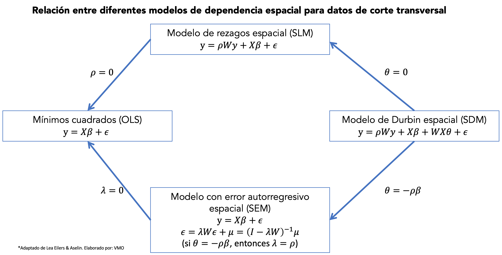
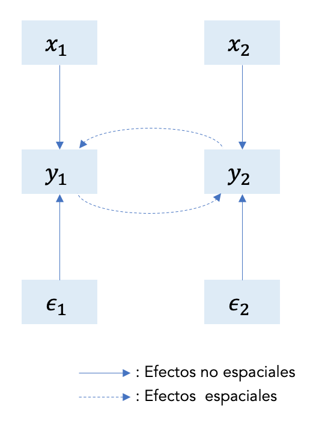
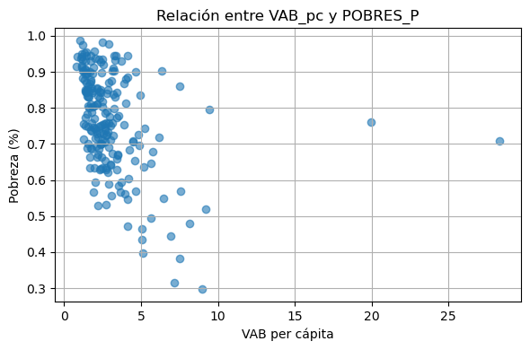
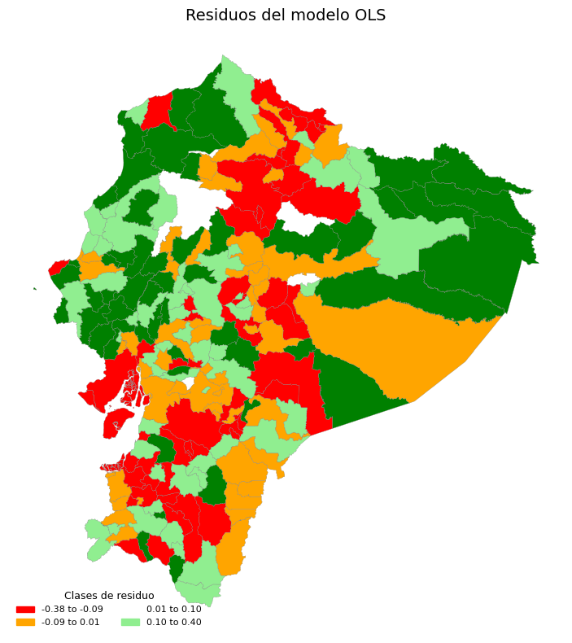
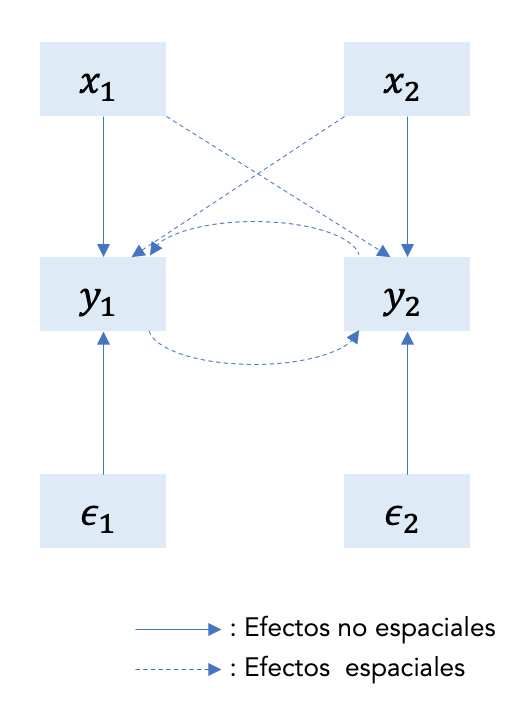
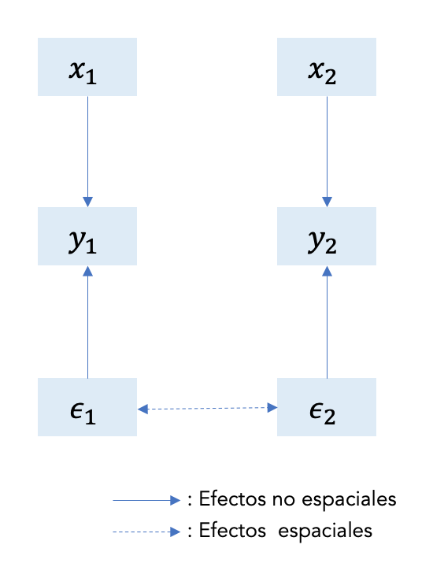
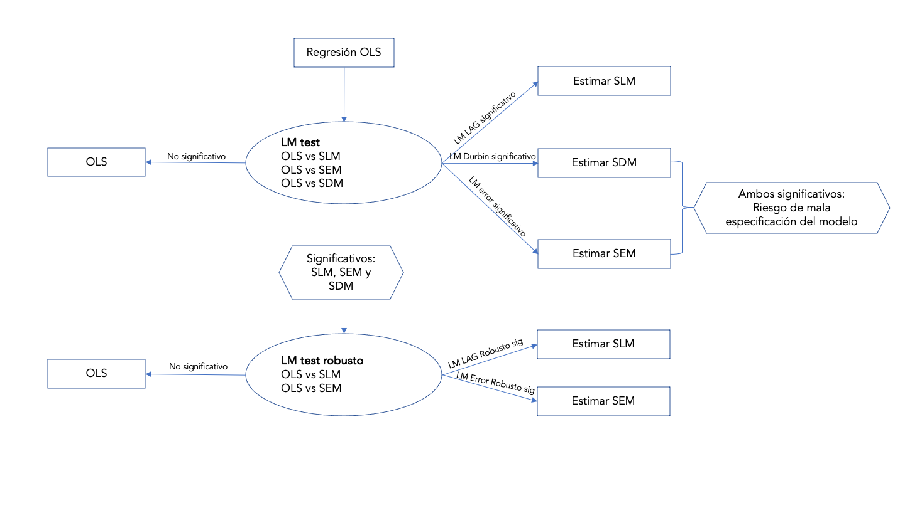

14. Regresión lineal#
En un modelo de regresión espacial, donde tenemos una variable dependiente y variables exógenas, nos debemos preguntar por fuentes de :
Dependencia espacial: efectos indirectos espaciales (spatial spillovers), que aparecen como flujos interregionales de conocimiento, comercio o factores de producción.
Heterocedasticidad: resultantes de límites administrativos que no son consistentes con la naturaleza de los procesos espaciales estudiados.
¿Qué data es espacial en economía?
Se trata básicamente de todos los datos recogidos por las oficinas estadísticas (INEC en Ecuador) para zonas separadas por límites administrativos (provincias, cantones, parroquias) y datos puntuales a los que se pueden asignar ubicaciones, relacionados con la vida de la población, las actividades de las empresas y los rastros en la realidad virtual (registro de teléfonos móviles, coches, ordenadores IP).
¿Cuáles son las consecuencias de omitir la dimensión espacial cuando los datos son espaciales?
En cuanto a la variable dependiente, se rompe el supuesto clásico de independencia y los errores por lo tanto no tienen covarianza igual a cero porque muestran dependencia espacial.
La omisión de una variable espacial significtiva, por ejemplo \(\rho Wy\) o \(\theta Wy\) se traduce en un error de especificación del modelo.
La omisión de un rezago espacial y la estimación de los parámetros usando OLS tradicional genera estimadores sesgados e inconsistentes.
Cuando no se trata la autocorrelación espacial de los residuos, las estimaciones OLS son ineficientes, pero asintóticamente consistentes.
Heterogeneidad
Cuando tenemos heterogeneidad, podemos tratarlo
Usar datos en diferente escala, es decir, datos a un nivel de agregación menor o mayor.
Es posible incluir variables que se aproximen a fenómenos espaciales no observados: pueden ser variables dummy (cero-uno) para características o ubicaciones específicas (por ejemplo, capitales regionales, pertenencia a conglomerados) o variables con una distribución espacial muy similar a la distribución del error.
Es posible incluir coordenadas geográficas como variables explicativas.
Es posible estimar modelos econométricos en grupos (clusters) que muestran homogeneidad interna y diversidad inte-cluster.
Se debe elegir el método de estimación espacial correcto, seleccionando la mejor matriz de pesos espaciales posible, el tipo y la clase de modelo adecuados y una buena especificación del modelo.
14.1. Una tipología de modelos econométricos#
Podemos agrupar los modelos en función de sus características. Aquí se propone, restringido a modelos de regresión lineal, una clasificación de modelos econométricos espaciales.
14.1.1. Una clasificación general#
Recordemos que la característica principal de la econometría espacial es cómo los efectos espaciales son tomados en cuenta.
Esta característica presupone que el espacio ha sido formalizado de una forma u otra.
En general la matriz de pesos espaciales logra ser aplicable en varios contextos empíricos siempre que:
los pesos recojan adecuadamente la dependencia espacial
la heterogeneidad espacial sea tomada en cuenta en la especificación del modelo.
Una distinción importante en términos de estrategias de estimación y pruebas de hipótesis es de procesos espaciales:
simultáneos: expresado como probabilidad conjunta
condicionales: expresado como probabilidad condicional.
Ambos se suelen presentar de manera autor regresiva: donde el valor de una variable en un punto se relaciona con sus valores en el resto del sistema espacial.
Un modelo simultáneo se remonta al trabajo de @whittle1954stationary que en notación matricial es equivalente a un modelo espacial autorregresivo de primer orden:
con \(y\) como el vector de la variable y \(\epsilon\) el vector del término de error, y \(W\) como la matriz de pesos espaciales correspondiente. La estimación de este modelo implica la especificación de una distribución de probabilidad conjunta y optimización no lineal.
El modelo condicional fue propuesto originalmente por @besag1974spatial como alternativa a la estimación no lineal de Whittle.
En esencia, consiste en una relación lineal entre la esperanza condicional de la variable dependiente y sus valores en el resto del sistema (\(S\)):
La estructura condicional del modelo hace posible míninos cuadrados como técnica de estimación siempre que los datos se codifiquen de un modo particular.
La codificación consiste en eliminar observaciones tal que las variables dependientes que quedan se puedan considerar como independientes (no contiguas). Si hay pocas observaciones no se recomienda hacerlo, también debe considerarse que este proceso no es único por lo que pueden obtenerse resultados diferentes según la codificación.
@besag1975statistical, y @lele1986besag han desarrollado -a pseudo-máxima verosimilitud para el modelo condicional que evita la codificación; pero es más compleja matemáticamente.
La mayoría de situaciones en ciencias regionales empíricas se expresan más fácilmente en forma simultánea. Este enfoque también es más cercano al enfoque econométrico tradicional.
De forma análoga al enfoque Box-Jenkins en series de tiempo, los especificaciones de modelos espaciales combinan procesos auto regresivos y de media móvil. Un proceso espacial de media móvil tiene la forma:
donde \(y\) es un vector de variables, o un vector de términos aleatorios independientes y \(W\) es la matriz de peros espaciales.
Otro punto importante pone la diferenciación de modelos son los datos:
En observaciones transversales (cross-sectional) hay información insuficiente en los datos para extraer un patrón simultáneo total de la interacción, y a reparametrización del modelo en términos auto regresivos es una necesidad.
Si se tienen datos cross-sectional y de series de tiempo, la información temporal puede relajar esa necesidad.
14.1.2. Una taxonomía de Modelos de Regresión Lineal Espacial#
Esta clasificación asume observaciones de unidades disponibles en corte transversal en un punto del tiempo.
Se deriven varios modelos mediante imposición de restricciones en el modelo general.
El punto de partida es:
con \(\mu\sim N(0,\Omega)\), y los elementos de la diagonal de la matriz de covarianza del error \(\Omega\) como
En esta especificación:
\(\beta_{K\times 1}\) es el vector de parámetros de las variables exógenas (no rezagadas) \(X_{N\times K}\).
\(\rho\) es el coeficiente de la variable dependiente espacialmente rezagada.
\(\lambda\) es el coeficiente de la estructura autorregresiva espacial para el error \(\epsilon\).
La perturbación \(\mu\) se asume normalmente distribuida con matriz de covarianza \(\Omega\). Los elementos de la diagonal de \(\Omega\) permiten heterocedasticidad como una función de \(P+1\) variables exógenas \(z\) que incluyen el término constante.
Los \(P\) parámetros \(\alpha\) están asociados con los términos no constantes, tal que, para \(\alpha=0\), se tiene que
(la situación clásica de homocedasticidad).
Las matrices \(N\times N\) (\(W_1\) y \(W_2\)) son matrices de pesos espaciales estandarizadas o no estandarizados.
\(W_1\) se asocia con el proceso autorregresivo de la variable dependiente. \(W_2\) se asocia con el proceso autorregresivo del error.
Esto sugiere que los dos procesos pueden tener diferentes estructuras espaciales. Así propuesto, los modelos pueden tener \(3+K+P\) parámetros desconocidos, en forma vectorial:
Varias estructuras espaciales se derivan cuando sub vectores de \(\theta\) se hacen cero.
14.1.2.1. Modelo clásico de regresión lineal, sin efectos espaciales#
para \(\rho=0\), \(\lambda=0\), \(\alpha=0\), (\(P+2\) restricciones):
14.1.2.2. Modelo autorregresivo espacial (SLM)#
incluye especificaciones de factor común (con \(WX\) incluido en las variables explicativas), como caso especial (si se incluye \(WX\) se tiene el modelo de Durbin)
para \(\rho=0\), \(\alpha=0\), (\(P+1\) restricciones):
14.1.2.3. Modelo de regresión lineal con error autorregresivo espacial (SEM)#
para \(\rho=0\), \(\alpha=0\), (\(P+1\) restricciones):
A partir del modelo (1), nota que:
14.1.2.4. Modelo autorregresivo espacial mixto regresivo con error espacial autorregresivo (SARMA)#
para \(\alpha=0\), (\(P\) restricciones):
Se puede obtener cuatro especificaciones más si se permite heterocedasticidad (una forma para \(h(z\alpha)\)) en (3)-(6).
Los modelos que estimaremos en las siguientes secciones son SAR, SEM y SDM. La figura @ref(fig:modelsplot) muestra la relación entre ellos.
{kind=link}

14.2. Modelo de rezagos espacial (SLM)#
El modelo de rezagos espacial (Spatial lag model o SLM) es:
donde \(y\) es un vector \(n\times 1\) de observaciones de la variable dependiente, \(X\) es una matriz \(n\times K\) de observaciones de las variables explicativas, \(\beta\) es el vector de parámetros \(K\times 1\).
La siguiente figura @ref(fig:slm) representa el modelo autorregresivo espacial en (7) para dos regiones. Las variables (\(x_1\), \(x_2\)) y los términos no observados (\(\epsilon_1\), \(\epsilon_2\)) tienen un efecto directo sobre \(y\) para ambas regiones. Tenga en cuenta que el modelo incorpora efectos de desbordamiento espacial por el efecto de \(y_1\) sobre \(y_2\) y viceversa. Es decir, el modelo refleja la simultaneidad inherente a la autocorrelación espacial.
{kind=link}

La ecuación (7) expresa el modelo SLM en su forma estructural o de comportamiento donde se relaciona tanto las variables exógenas como endógenas con la dependiente \(y\).
Otra forma de expresar el modelo es en su forma reducida:
que ya no contiene ninguna variable dependiente espacialmente rezagada en el lado de la derecha. La ecuación (8) expresa la naturaleza simultánea del proceso autorregresivo espacial.
La forma estructural es un modelo de la forma \(f(y,X,\epsilon)\), mientras la forma reducida es de la forma \(y = g(X,\epsilon)\).
Notemos que \((I-\rho W)\) debe ser invertible, es decir \(det(I-\rho W)\neq 0\). Entonces ¿qué valores de \(\rho\) hacen que \((I-\rho W)\) sea invertible? Se puede demostrar que para matrices simétricas, \((I-\rho W)\) es invertible si
donde \(\omega_{min}^{-1}\) y \(\omega_{max}^{-1}\) son los valores propios mínimo y máximo de \(W\).
Recuerda que es común estandarizar \(W\) por fila tal que sus filas sumen \(1\). Dado que \(W\) es no negativa, esto asegura que los pesos estén entre \(0\) y \(1\) y la estandarización se puede interpretar como promediar los valores de los vecinos.
Si \(W\) es estandarizada por filas, esto implica que \(-1<\rho <1\) pero recuerda que esto no significa que \(\rho\) sea la correlación convencional, esto solo sucede porque \(W\) es estandarizada por filas. Un problema de estandarizar por filas es que la comparación entre filas puede resultar complicado.
Otra forma de estandarizar \(W\) es multiplicarla por un número, digamos \(a\) tal que se remueva el efecto de las unidades de medida. En particular:
Como resultado, \((I-\rho W)\) será invertible para \(|\rho|=\frac{1}{a}\). Ten en cuenta que esta normalización tiene la ventaja de garantizar que las ponderaciones espaciales resultantes, \(w_{ij}\), estén todas entre \(0\) y \(1\) y, por lo tanto, aún puedan interpretarse como intensidades de influencia relativas.
Los momentos del modelo en forma reducida son:
Esperanza
Expansión de Leontief: Si \(|\rho|<1\), entonces $\((I-\rho W)^{-1}=\sum_{i=0}^{\infty}(\rho W)^i\)$
En promedio, el valor de \(y\) en una ubicación \(i\) no solo se explica por los valores de las variables explicativas asociadas a esta ubicación, sino también por las asociadas a todas las demás ubicaciones (vecinas o no) a través de la transformación espacial inversa \((I-\rho W)^{-1}\).
Este efecto multiplicador espacial disminuye con la distancia, es decir, las potencias de \(W\) en la expansión en serie de \((I-\rho W)^{-1}\)
Un choque aleatorio en una ubicación \(i\) no solo afecta el valor de \(y\) en esta ubicación, sino que también tiene un impacto en los valores de \(y\) en todas las demás ubicaciones a través de la misma transformación inversa espacial \((I-\rho W)^{-1}\).
Varianza
Esta matriz de varianza-covarianza es completa, lo que implica que cada ubicación está correlacionada con todas las demás ubicaciones del sistema.
Sin embargo, esta correlación disminuye con la distancia. Esta ecuación también muestra que la covarianza entre cada par de términos de error no es nula y disminuye con el orden de proximidad.
Además, los elementos de la diagonal de \(\mathbb{E}(\epsilon\epsilon^T|W,X)\) no son constantes. Esto implica heterocedasticidad de error de \(\epsilon\).
Dado que no hemos asumido nada sobre la varianza del error, podemos decir que \(\mathbb{E}(\epsilon\epsilon^T|W,X)\) es una matriz completa, digamos \(\Omega_\epsilon\). Esto cubre la posibilidad de heterocedasticidad, autocorrelación espacial o ambas. En ausencia de cualquiera de estas complicaciones, la matriz de varianza se simplifica a la \(\sigma^2I\) habitual.
14.2.1. Ejemplo#
Realizaremos una regresión donde la variable dependiente es la pobreza por NBI (personas) y la independiente es el valor agregado bruto no petrolero per cápita.
Preparamos los datos: esto incluye el cálculo de la matriz de ponderaciones espaciales.
# ST ***** Mapa
import geopandas as gpd
import requests
from io import BytesIO
import zipfile
import tempfile
import os
def read_git_shp(nombre, url):
response = requests.get(url)
if response.status_code != 200:
raise Exception(f"Error al descargar shapefile: {response.status_code}")
zip_bytes = BytesIO(response.content)
with zipfile.ZipFile(zip_bytes, "r") as z:
shp_files = [f for f in z.namelist() if f.endswith(nombre + ".shp")]
if not shp_files:
raise FileNotFoundError(f"No se encontró {nombre}.shp en el zip")
shp_name = shp_files[0]
with tempfile.TemporaryDirectory() as tmpdirname:
z.extractall(tmpdirname)
gdf = gpd.read_file(os.path.join(tmpdirname, shp_name))
return gdf
# Uso correcto
url = "https://github.com/vmoprojs/DataLectures/raw/master/SpatialData/SHP.zip"
db = read_git_shp("nxcantones", url)
db = db[db['DPA_PROVIN'] != "20"]
db["area_sqm"] = db.geometry.area/1000000 #area esta en metros cuadrados, conviero a KM cuadrados
# END ***** Mapa
import pandas as pd
# **** Importo datos: VAB no petrolero
# URL del archivo CSV con datos de VAB no petrolero por cantón
url_vab = "https://raw.githubusercontent.com/vmoprojs/DataLectures/master/SpatialData/VABNoPetroleroCantones2007-2019.csv"
datos = pd.read_csv(url_vab, sep=",")
# Completa los códigos cantonales con ceros a la izquierda si tienen solo 3 caracteres
datos['COD_CANT'] = datos['COD_CANT'].astype(str).str.zfill(4)
# Filtra los datos al año 2019
datos = datos[datos['YEAR'] == 2019]
# **** Importo datos: Población por cantones
url_poblacion = "https://raw.githubusercontent.com/vmoprojs/DataLectures/master/SpatialData/proyeccion_cantonal_total_2010-2020.csv"
poblacion = pd.read_csv(url_poblacion, sep=";")
# Completa los códigos cantonales con ceros a la izquierda
poblacion['CODIGO'] = poblacion['CODIGO'].astype(str).str.zfill(4)
# **** Importo datos: NBI (Necesidades Básicas Insatisfechas)
url_nbi = "https://raw.githubusercontent.com/vmoprojs/DataLectures/master/SpatialData/NBI_PER_CANT.csv"
nbi = pd.read_csv(url_nbi, sep=";")
nbi['CODIGO'] = nbi['CODIGO'].astype(str).str.zfill(4)
# Merge: Agrega a los datos VAB la población del año 2020 y superficie
datos = datos.merge(
poblacion[['CODIGO', 'A_2020', 'SuperficieKM2']],
left_on='COD_CANT',
right_on='CODIGO',
how='left'
)
# Merge: Agrega la proporción de pobres (NBI)
datos = datos.merge(
nbi[['CODIGO', 'POBRES_P']],
left_on='COD_CANT',
right_on='CODIGO',
how='left'
)
# Cálculo del VAB per cápita (miles USD / persona)
datos['VAB_PC'] = datos['VAB'] / datos['A_2020']
# Cálculo de densidad poblacional (habitantes por km2)
datos['DensPob'] = datos['A_2020'] / datos['SuperficieKM2']
# **** Importo datos: NBICOVID desde fuente pública
url_c19 = "https://raw.githubusercontent.com/andrab/ecuacovid/master/datos_crudos/positivas/por_fecha/cantones_por_dia_acumuladas.inec.csv"
c19 = pd.read_csv(url_c19, sep=",")
# Extrae columnas relevantes: código cantón e infecciones acumuladas al 24-03-2022
c19 = c19[['inec_canton_id', '24/03/2022']]
# Completa códigos cantonales con ceros a la izquierda
c19['inec_canton_id'] = c19['inec_canton_id'].astype(str).str.zfill(4)
# Renombra columnas para hacer merge más fácilmente
c19.columns = ['COD_CANT', 'C19']
# Merge: Une los casos COVID con los datos previos
datos = datos.merge(c19, on='COD_CANT', how='left')
# Calcula tasa de contagio por cada 1000 habitantes
datos['C19_pc'] = (datos['C19'] / datos['A_2020']) * 1000
import numpy as np
from libpysal.weights import Queen
import libpysal
import warnings
# Filtramos: Excluimos las provincias con código "90" y "20"
db = db[(db['DPA_PROVIN'] != "90") & (db['DPA_PROVIN'] != "20")]
# Unimos los datos socioeconómicos al GeoDataFrame usando el código cantonal
db = db.merge(datos, left_on="DPA_CANTON", right_on="COD_CANT", how="left")
# Eliminamos filas con datos perdidos en la variable POBRES_P
db = db[~db['POBRES_P'].isna()]
# ---- Análisis espacial: Matriz de pesos de contigüidad ----
# Ignorar advertencias sobre geometría no válida (si ocurren)
warnings.filterwarnings("ignore", category=UserWarning)
# 1. Construir la lista de vecinos usando contigüidad tipo Reina
# El parámetro silence_warnings=True es útil si hay geometrías sin vecinos
w_queen = Queen.from_dataframe(db, silence_warnings=True,use_index=True)
# 2. Convertir la lista de vecinos a una matriz de pesos estilo "W" (filas normalizadas)
# libpysal ignora por defecto las unidades sin vecinos
w_queen.transform = 'R' # "R" es row-standardized
# Si deseas acceder directamente a la matriz de pesos como un diccionario:
weights_matrix = w_queen.full() # O usar .neighbors y .weights para listas directas
# También puedes verificar qué observaciones no tienen vecinos:
islands = w_queen.islands # Lista de índices (cantones) sin vecinos
islands
[]
Revisamos si el NBI tiene autocorrelación espacial.
import matplotlib.pyplot as plt
import esda
# Variables
y = db['POBRES_P'].values
x = db['VAB_PC'].values
# Opcional: otros indicadores como en R
# x = db['CONSUMO_INTERMEDIO'] / db['A_2019']
# x = db['PRODUCCION'] / db['A_2019']
# Correlación de Pearson (equivalente a cor(x,y) en R)
corr_xy = np.corrcoef(x, y)[0, 1]
print(f"Correlación entre x e y: {corr_xy:.4f}")
# Gráfico de dispersión
plt.figure(figsize=(6, 4))
plt.scatter(x, y, alpha=0.6)
plt.xlabel("VAB per cápita")
plt.ylabel("Pobreza (%)")
plt.title("Relación entre VAB_pc y POBRES_P")
plt.grid(True)
plt.tight_layout()
plt.show()
# Moran Monte Carlo test (999 permutaciones)
moran_mc_result = esda.moran.Moran(y, w_queen,permutations=999)
moran_mc_result.I
# Mostrar resultados
print("I de Moran:", round(moran_mc_result.I, 4))
print("P-valor (perm.):", round(moran_mc_result.p_sim, 4))
print("Media permutada:", round(moran_mc_result.EI_sim, 4))
Correlación entre x e y: -0.3461

I de Moran: 0.3056
P-valor (perm.): 0.001
Media permutada: -0.0043
Se rechaza la hipótesis nula de independencia espacial.
Ajustamos un modelo de regresión lineal.
db[['POBRES_P','VAB_PC']].describe()
| POBRES_P | VAB_PC | |
|---|---|---|
| count | 207.000000 | 207.000000 |
| mean | 0.764604 | 3.039618 |
| std | 0.137585 | 2.671242 |
| min | 0.297000 | 0.789828 |
| 25% | 0.687000 | 1.723566 |
| 50% | 0.773000 | 2.408687 |
| 75% | 0.872500 | 3.375400 |
| max | 0.987000 | 28.340111 |
import statsmodels.api as sm
import statsmodels.formula.api as smf
# Asegúrate de tener x e y como columnas en un DataFrame
df = pd.DataFrame({'x': x, 'y': y})
# Agrega constante (intercepto) manualmente
X = sm.add_constant(df['x']) # crea matriz con intercepto
model = sm.OLS(df['y'], X).fit()
# Resumen del modelo (equivalente a summary(mod.lm) en R)
print(model.summary())
OLS Regression Results
==============================================================================
Dep. Variable: y R-squared: 0.120
Model: OLS Adj. R-squared: 0.115
Method: Least Squares F-statistic: 27.90
Date: Thu, 17 Jul 2025 Prob (F-statistic): 3.25e-07
Time: 22:13:19 Log-Likelihood: 130.57
No. Observations: 207 AIC: -257.1
Df Residuals: 205 BIC: -250.5
Df Model: 1
Covariance Type: nonrobust
==============================================================================
coef std err t P>|t| [0.025 0.975]
------------------------------------------------------------------------------
const 0.8188 0.014 60.016 0.000 0.792 0.846
x -0.0178 0.003 -5.282 0.000 -0.024 -0.011
==============================================================================
Omnibus: 3.772 Durbin-Watson: 1.601
Prob(Omnibus): 0.152 Jarque-Bera (JB): 3.592
Skew: -0.322 Prob(JB): 0.166
Kurtosis: 3.032 Cond. No. 6.35
==============================================================================
Notes:
[1] Standard Errors assume that the covariance matrix of the errors is correctly specified.
Por cada incremento de 1 mil dólares en el VAB per cápita, el porcentaje de pobreza disminuye en 0.0178 puntos porcentuales, en promedio, manteniendo todo lo demás constante.
Estadísticas de Ajuste del Modelo
R-cuadrado
Proporción de la varianza total explicada por el modelo. Aquí: 0.120, es decir, el 12% de la variación en pobreza.
R-cuadrado ajustado
Corrige el \(R^2\) por el número de predictores. Aquí: 0.115.
Estadístico F
Evalúa si al menos un coeficiente es diferente de cero. Valor: 27.90, muy significativo.
Estadísticas del Coeficiente
t-valor
Intervalo de confianza al 95%
Ambos coeficientes tienen valor-p < 0.05 → son estadísticamente significativos.
Diagnósticos de Residuos
Prueba |
Valor |
Valor-p |
Interpretación |
|---|---|---|---|
Omnibus |
3.772 |
0.152 |
No se rechaza la normalidad de residuos. |
Jarque-Bera |
3.592 |
0.166 |
Apoya la normalidad de los residuos. |
Skew |
-0.322 |
— |
Leve sesgo negativo (asimetría a la izquierda). |
Kurtosis |
3.032 |
— |
Curtosis normal (esperado = 3). |
Durbin-Watson |
1.601 |
— |
No hay evidencia clara de autocorrelación. |
Cond. No. |
6.35 |
— |
No hay problemas de multicolinealidad. |
Revisamos si los residuos de la regresión tienen autocorrelación espacial.
import mapclassify
from matplotlib.colors import ListedColormap, BoundaryNorm
# Obtener residuos del modelo (equiv. a mod.lm$residuals)
res = model.resid # si usaste smf.ols('y ~ x', ...)
# Crear paleta de colores (equivalente a RColorBrewer y colorRampPalette)
res_palette = ListedColormap(["red", "orange", "white", "lightgreen", "green"])
# Clasificar los residuos en 5 clases usando cuantiles fijos (como style = "fixed")
breaks = np.quantile(res, [0, 0.25, 0.5, 0.75, 1.0]) # percentiles 0%, 25%, ..., 100%
classes = mapclassify.UserDefined(res, bins=breaks[1:-1]) # 5 clases => 4 cortes internos
# Ahora `classes.yb` contiene los índices de clase (0 a 4)
db['residuos'] = res
db['res_clase'] = classes.yb # asigna clase a cada cantón
# Opcional: mostrar resumen
print("Breaks:", breaks)
print("Número de elementos por clase:", np.bincount(classes.yb))
Breaks: [-0.37554289 -0.08643192 0.00997146 0.10449926 0.39540284]
Número de elementos por clase: [52 52 51 52]
# Crear mapa coroplético
fig, ax = plt.subplots(figsize=(10, 8))
# Dibujar geometría coloreando según clase de residuo
db.plot(
column='res_clase',
cmap=res_palette,
linewidth=0.2,
edgecolor='grey',
ax=ax,
legend=False
)
# Agregar título
ax.set_title("Residuos del modelo OLS", fontsize=14)
# Crear leyenda personalizada con intervalos
import matplotlib.patches as mpatches
legend_labels = []
for i in range(len(breaks) - 1):
label = f"{breaks[i]:.2f} to {breaks[i+1]:.2f}"
patch = mpatches.Patch(color=res_palette(i), label=label)
legend_labels.append(patch)
# Añadir la leyenda
ax.legend(
handles=legend_labels,
loc='lower left',
title='Clases de residuo',
fontsize=8,
title_fontsize=9,
frameon=False,
ncol=2
)
# Quitar ejes
ax.axis('off')
# Mostrar mapa
plt.tight_layout()
plt.show()

Ahora analizamos la correlación espacial del residuo
# Moran Monte Carlo test (999 permutaciones)
moran_mc_residuo = esda.moran.Moran(res, w_queen,permutations=999)
moran_mc_residuo.I
# Mostrar resultados
print("I de Moran:", round(moran_mc_residuo.I, 4))
print("P-valor (perm.):", round(moran_mc_residuo.p_sim, 4))
print("Media permutada:", round(moran_mc_residuo.EI_sim, 4))
I de Moran: 0.2611
P-valor (perm.): 0.001
Media permutada: -0.0058
Se rechaza la hipótesis nula de independencia.
Caculamos el modelo SLM.
La función lagsarlm del paquete spatialreg (R. Bivand and Piras (2015)) nos permite hacer la estimación:
from spreg import ML_Lag
# Variables dependiente e independiente (en matriz y con constante)
#y = db['POBRES_P'].values.reshape(-1, 1)
#X = db[['VAB_PC']].values
#X = np.hstack((np.ones((X.shape[0], 1)), X)) # agrega intercepto
# Estima modelo SLM (Spatial Lag Model, como lagsarlm en R)
model_slm = ML_Lag(y, X, w=w_queen, name_y='POBRES_P', name_x=['const', 'VAB_PC'],name_ds='Cantones 2019',name_w='Matriz Queen')
# Muestra resumen
print(model_slm.summary)
REGRESSION RESULTS
------------------
SUMMARY OF OUTPUT: MAXIMUM LIKELIHOOD SPATIAL LAG (METHOD = FULL)
-----------------------------------------------------------------
Data set :Cantones 2019
Weights matrix :Matriz Queen
Dependent Variable : POBRES_P Number of Observations: 207
Mean dependent var : 0.7646 Number of Variables : 3
S.D. dependent var : 0.1376 Degrees of Freedom : 204
Pseudo R-squared : 0.2787
Spatial Pseudo R-squared: 0.1551
Log likelihood : 145.9993
Sigma-square ML : 0.0137 Akaike info criterion : -285.999
S.E of regression : 0.1170 Schwarz criterion : -276.000
------------------------------------------------------------------------------------
Variable Coefficient Std.Error z-Statistic Probability
------------------------------------------------------------------------------------
CONSTANT 0.47991 0.06339 7.57098 0.00000
VAB_PC -0.01550 0.00306 -5.06510 0.00000
W_POBRES_P 0.44182 0.07968 5.54469 0.00000
------------------------------------------------------------------------------------
Warning: Variable(s) ['const'] removed for being constant.
SPATIAL LAG MODEL IMPACTS
Impacts computed using the 'simple' method.
Variable Direct Indirect Total
VAB_PC -0.0155 -0.0123 -0.0278
================================ END OF REPORT =====================================
14.2.2. Resumen general del modelo SLM (spreg.ML_Lag)#
Elemento del resumen |
Descripción |
Acceso en |
|---|---|---|
Dependent Variable : |
Variable dependiente del modelo (porcentaje de pobreza) |
|
Number of Observations: |
Número total de observaciones (cantones) |
|
Number of Variables: |
Incluye intercepto, VAB_PC y el término espacial (rho) |
|
Degrees of Freedom: |
Grados de libertad ( |
|
Mean dependent var: |
Media de la variable dependiente ( |
|
S.D. dependent var: |
Desviación estándar de |
|
Pseudo R-squared: |
Medida de ajuste (no es directamente comparable a R² clásico) |
|
Spatial Pseudo R-squared: |
Variante que considera la autocorrelación espacial |
|
Log likelihood: |
Valor del log-verosimilitud |
|
Sigma-square ML: |
Varianza residual estimada por máxima verosimilitud |
|
S.E. of regression: |
Error estándar de los residuos |
|
Akaike info criterion: |
Criterio de información de Akaike |
|
Schwarz criterion: |
Criterio de Schwarz (BIC) |
|
Fórmula model_slm.pr2
donde:
\(L_{\text{full}}\) : Log-verosimilitud del modelo completo (con variables explicativas y rezago espacial).
\(L_{\text{null}}\): Log-verosimilitud del modelo con solo el intercepto.
Interpretación
Toma valores entre 0 y 1 (puede ser negativa si el modelo es peor que el nulo).
Evalúa la mejora del modelo completo frente a uno sin predictores.
Fórmula model_slm.pr2_spatial
Este mide la contribución específica del rezago espacial al ajuste del modelo.
Fórmula aproximada
donde:
\(L_{\text{SAR}}\): Log-verosimilitud del modelo SAR (espacial).
\(L_{\text{OLS}}\): Log-verosimilitud del modelo OLS tradicional.
Interpretación
Refleja la ganancia explicativa atribuible al componente espacial ( \(\rho W y\)).
En tu modelo,
pr2_spatial = 0.1551sugiere que un 15.5% del ajuste se debe al efecto espacial.
En modelos como el SAR, el \(R^2\) clásico no se puede usar directamente debido a:
Dependencia espacial en la variable dependiente (\(y\) aparece en ambos lados).
Presencia de efectos indirectos (spillover).
Estimación basada en máxima verosimilitud.
Por ello, se utilizan pseudo \(R^2\) que son estadísticamente coherentes con la metodología del modelo.
El efecto total de una variable en un modelo espacial se divide en:
Directo: impacto de la variable sobre la unidad geográfica propia.
Indirecto (spillover): efecto que tiene el cambio en una unidad sobre las unidades vecinas.
Total: suma de los efectos directos e indirectos.
Variable |
Directo |
Indirecto |
Total |
|---|---|---|---|
VAB_PC |
-0.0155 |
-0.0123 |
-0.0278 |
Interpretación:
Un aumento de 1 mil dólares en el VAB per cápita se asocia con una reducción total de 2.78 puntos porcentuales en la pobreza, considerando tanto el cantón como sus vecinos.
El efecto de spillover es significativo y refuerza la idea de que el desarrollo económico tiene efectos regionales positivos.
Revisamos si los residuos siguen presentando autocorrelación espacial:
res_sp = model_slm.u # residuos del modelo espacial (y - y_hat)
# Moran Monte Carlo test (999 permutaciones)
moran_mc_residuo_sp = esda.moran.Moran(res_sp, w_queen,permutations=999)
moran_mc_residuo_sp.I
# Mostrar resultados
print("I de Moran:", round(moran_mc_residuo_sp.I, 4))
print("P-valor (perm.):", round(moran_mc_residuo_sp.p_sim, 4))
print("Media permutada:", round(moran_mc_residuo_sp.EI_sim, 4))
I de Moran: -0.0472
P-valor (perm.): 0.183
Media permutada: -0.0053
No se rechaza la hipótesis nula de independencia.
14.3. Modelo de Durbin espacial (SDM)#
El modelo de Durbin así como su forma estructural (9) y su forma reducida (10):
El SDM da como resultado un modelo espacial autorregresivo de una forma especial, que incluye no solo la variable dependiente espacialmente rezagada y las variables explicativas, sino también las variables explicativas espacialmente rezagadas, \(WX\). \(y\) depende de factores de si misma de la matriz \(X\), más los mismos factores promediados en las \(n\) regiones vecinas.
Ten en cuenta en la siguiente figura @ref(fig:durbin) que la Región 1 no solo ejerce un impacto en la Región 2 (y viceversa) a través de \(y\), sino también a través de la variable independiente \(x\).
{kind=link}

Este modelo también tiene muy buenas propiedades en términos de cálculo de efectos marginales que exploraremos más adelante.
Siguiendo con nuestro ejemplo, la estimación de Durbin en Python se puede usar el argumento slx_lags' (https://pysal.org/spreg/generated/spreg.ML_Lag.html#spreg.ML_Lag):
model_sdm = ML_Lag(
y,
X,
w=w_queen,
name_y='POBRES_P',
name_x=['const', 'VAB_PC'],
name_ds='Cantones 2019',
name_w='Matriz Queen',
slx_lags = 1 , # incluye W_X (rezagos espaciales de las X),
spat_impacts="simple"
)
# Muestra resumen
print(model_sdm.summary)
REGRESSION RESULTS
------------------
SUMMARY OF OUTPUT: MAXIMUM LIKELIHOOD SPATIAL LAG WITH SLX - SPATIAL DURBIN MODEL (METHOD = FULL)
-------------------------------------------------------------------------------------------------
Data set :Cantones 2019
Weights matrix :Matriz Queen
Dependent Variable : POBRES_P Number of Observations: 207
Mean dependent var : 0.7646 Number of Variables : 4
S.D. dependent var : 0.1376 Degrees of Freedom : 203
Pseudo R-squared : 0.2804
Spatial Pseudo R-squared: 0.1728
Log likelihood : 147.6858
Sigma-square ML : 0.0136 Akaike info criterion : -287.372
S.E of regression : 0.1167 Schwarz criterion : -274.041
------------------------------------------------------------------------------------
Variable Coefficient Std.Error z-Statistic Probability
------------------------------------------------------------------------------------
CONSTANT 0.55555 0.07741 7.17645 0.00000
VAB_PC -0.01498 0.00309 -4.85010 0.00000
W_VAB_PC -0.01198 0.00645 -1.85667 0.06336
W_POBRES_P 0.39002 0.08583 4.54396 0.00001
------------------------------------------------------------------------------------
Warning: Variable(s) ['const'] removed for being constant.
DIAGNOSTICS FOR SPATIAL DEPENDENCE
TEST DF VALUE PROB
Common Factor Hypothesis Test 1 8.494 0.0036
SPATIAL DURBIN MODEL IMPACTS
Impacts computed using the 'simple' method.
Variable Direct Indirect Total
VAB_PC -0.0150 -0.0292 -0.0442
================================ END OF REPORT =====================================
Common Factor Hypothesis Test
Este test evalúa si el modelo SDM se puede simplificar a un modelo SAR estándar, es decir, si los efectos de \(X\) y \(WX\) son proporcionales:
Hipótesis
\( H_0: \theta = \rho \beta \) → El modelo SAR es suficiente (restricción válida)
\( H_1: \theta \ne \rho \beta \) → Se necesita el modelo SDM (restricción inválida)
Estadístico del Test
donde \( \Sigma \) es la matriz de covarianzas de \( \hat{\theta} - \hat{\rho}\hat{\beta} \)
Valor observado: 8.494
p-valor: 0.0036
Interpretación
Se rechaza la hipótesis nula → El modelo SAR no es suficiente
Conclusión: se justifica el uso del modelo Spatial Durbin por su mayor flexibilidad
Efectos
Directo: Un aumento de 1 mil dólares en el VAB per cápita de un cantón reduce en promedio un 1.5% el nivel de pobreza de ese mismo cantón, manteniendo constante el resto de los factores.
Indirecto: Un aumento de 1 mil dólares en el VAB per cápita de un cantón reduce en promedio un 2.92% la pobreza en los cantones vecinos.
Total: Aumentar el VAB per cápita en 1 mil dólares reduce en promedio 4.42 puntos porcentuales la pobreza en toda la región, combinando el efecto local y los efectos sobre los vecinos.
res_sdm = model_sdm.u # residuos del modelo espacial (y - y_hat)
# Moran Monte Carlo test (999 permutaciones)
moran_mc_residuo_sdm = esda.moran.Moran(res_sdm, w_queen,permutations=999)
moran_mc_residuo_sdm.I
# Mostrar resultados
print("I de Moran:", round(moran_mc_residuo_sdm.I, 4))
print("P-valor (perm.):", round(moran_mc_residuo_sdm.p_sim, 4))
print("Media permutada:", round(moran_mc_residuo_sdm.EI_sim, 4))
I de Moran: -0.0257
P-valor (perm.): 0.329
Media permutada: -0.0045
14.4. Modelo con error espacial (SEM)#
Otra forma de dependencia espacial ocurre cuando la dependencia opera a través del proceso de error, ya que los errores de diferentes áreas pueden mostrar autocorrelación espacial. El modelo SEM se formula como:
donde \(\lambda\) es el parámetro autorregresivo del rezago espacial del error \(Wu\) y \(\epsilon\) es \(\text{i.i.d.}\).
En su forma estructural tenemos:
Esta expresión conduce a un efecto de difusión espacial global, pero no hay un efecto multiplicador espacial.
La siguiente figura @ref(fig:sem) visualiza el \(SEM\) para dos regiones. Ten en cuenta que el término de error de ambas regiones está relacionado y el único efecto espacial va de \(\epsilon_1\) a \(\epsilon_2\) y viceversa.
{kind=link}

Como afirman @anselin1998spatial, la dependencia del error espacial puede interpretarse como una nuisance (\(\lambda\) como un parámetro de nuisance) en el sentido de que refleja la autocorrelación espacial en los errores de medición o en variables que de otro modo no son cruciales para el modelo (es decir, las variables ignoradas se propagan a través de las unidades espaciales de observación).
A diferencia de los modelos anteriores, los efectos de las interacciones entre los términos de error no requieren un modelo teórico para un proceso de interacción espacial o social, sino que son consistentes con una situación en la que los determinantes de la variable dependiente omitidos del modelo están espacialmente autocorrelacionados, o con una situación donde los choques no observados siguen un patrón espacial.
Los efectos de interacción entre los términos no observados también pueden interpretarse como un mecanismo para corregir a los políticos que buscan rentas por cambios imprevistos en la política fiscal. Ver por ejemplo, @allers2005tax.
Siguiendo con nuestro ejemplo, la estimación de \(SEM\) en Python se puede usar la función ML_Error:
from spreg import ML_Error
model_sem = ML_Error(
y,
X,
w=w_queen,
name_y='POBRES_P',
name_x=['const', 'VAB_PC'],
name_ds='Cantones 2019',
name_w='Matriz Queen'
)
# Muestra resumen
print(model_sem.summary)
REGRESSION RESULTS
------------------
SUMMARY OF OUTPUT: ML SPATIAL ERROR (METHOD = full)
---------------------------------------------------
Data set :Cantones 2019
Weights matrix :Matriz Queen
Dependent Variable : POBRES_P Number of Observations: 207
Mean dependent var : 0.7646 Number of Variables : 2
S.D. dependent var : 0.1376 Degrees of Freedom : 205
Pseudo R-squared : 0.1198
Log likelihood : 143.5772
Sigma-square ML : 0.0140 Akaike info criterion : -283.154
S.E of regression : 0.1185 Schwarz criterion : -276.489
------------------------------------------------------------------------------------
Variable Coefficient Std.Error z-Statistic Probability
------------------------------------------------------------------------------------
CONSTANT 0.81608 0.01720 47.45032 0.00000
VAB_PC -0.01405 0.00310 -4.52533 0.00001
lambda 0.43710 0.08303 5.26455 0.00000
------------------------------------------------------------------------------------
Warning: Variable(s) ['const'] removed for being constant.
================================ END OF REPORT =====================================
/opt/anaconda3/envs/geo_env/lib/python3.12/site-packages/spreg/ml_error.py:184: RuntimeWarning: Method 'bounded' does not support relative tolerance in x; defaulting to absolute tolerance.
res = minimize_scalar(
Lambda representa la fuerza de la dependencia espacial en los errores.
Aquí, \(\lambda=0.437\) indica que los errores están correlacionados entre cantones vecinos: si un cantón tiene factores no observados que aumentan la pobreza, es probable que sus vecinos también los tengan.
El valor es estadísticamente significativo → confirma que existe dependencia espacial residual no capturada por VAB_PC.
Vemos la prueba de Moran sobre el residuo del modelo para evaluar si la autocorrelación ha sido removida:
res_sem = model_sem.u # residuos del modelo espacial (y - y_hat)
# Moran Monte Carlo test (999 permutaciones)
moran_mc_residuo_sem = esda.moran.Moran(res_sem, w_queen,permutations=999)
moran_mc_residuo_sem.I
# Mostrar resultados
print("I de Moran:", round(moran_mc_residuo_sem.I, 4))
print("P-valor (perm.):", round(moran_mc_residuo_sem.p_sim, 4))
print("Media permutada:", round(moran_mc_residuo_sem.EI_sim, 4))
I de Moran: 0.2761
P-valor (perm.): 0.001
Media permutada: -0.0046
Se rechazar la hipótesis nula, podemos concluir que el residuo del modelo SEM aún presenta autocorrelación espacial.
14.5. El mejor modelo espacial#
{kind=link}

¿Cómo decidir? Para el caso simple de elegir entre una alternativa SLM o SEM, existe evidencia de que el modelo adecuado es probablemente el que tiene el valor de prueba LM significativo más grande (@anselin1991properties).
Cuando el test \(\text{LM}_{LAG}\) es significativo y el \(\text{LM}_{ERR}\) es no es significativo, el modelo más apropiado es el modelo \(\text{SLM}\);
en la misma línea, cuando la prueba \(\text{LM}_{ERR}\) es significativa y el valor \(\text{LM}_{LAG}\) no es significativo, el modelo más apropiado es el modelo \(\text{SEM}\).
Como puede adivinar, a veces es posible encontrar que ambas pruebas estadísticas son significativas. En este caso, una regla de decisión puede ser la siguiente:
cuando el valor \(\text{LM}_{LAG}\) de prueba es mayor que el valor \(\text{LM}_{ERR}\) de prueba, sería mejor considerar el modelo \(\text{SLM}\);
cuando el valor \(\text{LM}_{ERR}\) de prueba es mayor que el valor \(\text{LM}_{LAG}\) de prueba, sería mejor considerar el modelo \(\text{SEM}\)
Por supuesto, si ambas estadísticas son significativas, también podría ser apropiado estimar un modelo autorregresivo general (\(\text{SAC}\)).
Siguiendo con nuestro ejemplo, la prueba del multiplicador de Lagrange en R se puede hacer con la función lm.RStests:
from spreg import LMtests
# Ajuste del modelo OLS
from spreg import OLS
ols = OLS(
y,
X,
w=w_queen,
name_y='POBRES_P',
name_x=['const', 'VAB_PC'],
name_ds='Cantones 2019',
name_w='Matriz Queen'
)
# Ejecutar pruebas LM
lm_tests = LMtests(ols, w_queen)
# **** Mostrar resultados
# LM para error espacial
print("LM Error:", lm_tests.lme)
print("Robust LM Error:", lm_tests.rlme)
# LM para rezago espacial
print("LM Lag:", lm_tests.lml)
print("Robust LM Lag:", lm_tests.rlml)
#print(dir(lm_tests))
LM Error: (np.float64(33.01633853705027), np.float64(9.138764734346233e-09))
Robust LM Error: (np.float64(3.5070884665373003), np.float64(0.06110675509815731))
LM Lag: (np.float64(42.2805543104223), np.float64(7.907490431860358e-11))
Robust LM Lag: (np.float64(12.77130423990935), np.float64(0.00035197733808348255))
res = model.resid # residuos del modelo espacial (y - y_hat)
# Moran Monte Carlo test (999 permutaciones)
moran_mc = esda.moran.Moran(res, w_queen,permutations=999)
moran_mc.I
# Mostrar resultados
print("I de Moran:", round(moran_mc.I, 4))
print("P-valor (perm.):", round(moran_mc.p_sim, 4))
print("Media permutada:", round(moran_mc.EI_sim, 4))
I de Moran: 0.2611
P-valor (perm.): 0.001
Media permutada: -0.0035
Las pruebas \(LM\) robustas tienen en cuenta la posibilidad alternativa, es decir, la prueba LMerr responderá tanto a una variable dependiente rezagada espacialmente omitida como a los residuos autocorrelacionados espacialmente, mientras que la prueba RLMerr robusta está diseñada para probar residuos autocorrelacionados espacialmente en la posible presencia de una variable dependiente espacialmente rezagada omitida.
14.6. Interpretación de los modelos espaciales#
14.6.1. Propagación (spillovers) espaciales#
Un enfoque importante de la ciencia regional es el desbordamiento espacial. Una definición básica de derrames en un contexto espacial sería que los cambios que ocurren en una región ejercen impactos en otras regiones (@lesage2014interpreting). Algunos ejemplos son:
Los cambios en la tasa impositiva por una unidad espacial podrían tener un impacto en las decisiones de fijación de la tasa impositiva de las regiones cercanas, un fenómeno que ha sido etiquetado como imitación de impuestos y competencia de criterios entre gobiernos locales.
Situaciones en las que las mejoras a la vivienda realizadas por un propietario ejercen un impacto beneficioso en los precios de venta de las viviendas vecinas.
La innovación de los investigadores universitarios se difunde a las empresas cercanas.
La contaminación del aire o del agua generada en una región se extiende a las regiones cercanas.
14.6.1.1. Spillovers globales#
Los efectos de propagación globales surgen cuando los cambios en una característica de una región afectan los resultados de todas las regiones. Esto se aplica incluso a la propia región, ya que los impactos pueden pasar a los vecinos y regresar a la propia región (retroalimentación). Específicamente, los spillovers globales impactan a los vecinos, los vecinos a los vecinos, los vecinos a los vecinos de los vecinos, etc.
14.6.1.2. Spillovers locales#
Los efectos de propagación locales representan una situación en la que el impacto recae solo en los vecinos cercanos o inmediatos, desapareciendo antes de que afecten a las regiones vecinas de los vecinos.
Como se puede observar en las definiciones anteriores, la principal diferencia es que la retroalimentación o la interacción endógena solo es posible para los efectos de contagio globales.
14.6.2. Efectos marginales#
Matemáticamente, la noción de spillover puede pensarse como la derivada \(\partial y_i/\partial x_j\). Esto significa que los cambios en las variables explicativas en la región \(i\) impactan en la variable dependiente en la región \(j \neq i\).
En general, se puede notar que el cambio de cada variable en cada región implica \(n^2\) efectos marginales potenciales. Si tenemos \(K\) variables en nuestro modelo, esto implica \(K\times n^2\) medidas potenciales. Incluso para valores pequeños de \(n\) y \(K\), puede resultar bastante difícil informar estos resultados de forma compacta.
Para superar este problema, @lesage2009introduction (p. 36-37) proponen las siguientes medidas de resumen escalares:
14.6.2.1. Impacto directo promedio (ADI)#
Sea \(S_r = A(W)^{-1}(I_n\beta_r+W\theta_r)\) para la variable \(r\) (\(A(W)=(I_n-\rho W)\)). El impacto de los cambios en la i-ésima observación de \(x_r\), denotada por \(x_{ir}\), en \(y_i\) puede ser resumida midiendo el promedio \(S_r(W)_{ii}\):
El promedio sobre el impacto directo asociado con todas las observaciones \(i\) es similar a las interpretaciones típicas de coeficientes de regresión que representan la respuesta promedio de las variables dependientes a independientes.
Por ejemplo, si la región \(i\) aumenta el número de viajeros que usan el transporte público, ¿cuál será el impacto promedio en los tiempos de viaje en la región \(i\)? Esta medida tendrá en cuenta los efectos de retroalimentación que surgen del cambio en el uso del transporte público de la \(i\)-ésima región en los tiempos de desplazamiento de las regiones vecinas en el sistema de regiones espacialmente dependientes.
14.6.2.2. Impacto total promedio hacia una observación (ATIT)#
Sea \(S_r = A(W)^{-1}(I_n\beta_r+W\theta_r)\) para la variable \(r\) (\(A(W)=(I_n-\rho W)\)). La suma en la \(i\)-ésima fila de \(S_r (W)\) representaría el impacto total en la observación individual \(y_i\) resultante de cambiar la \(r\)-ésima variable explicativa en la misma cantidad en todas las \(n\) observaciones. Hay \(n\) de estas sumas dadas por el vector de columna \(c_r = S_r (W)\iota_n\), por lo que un promedio de estos impactos totales es:
donde \(\iota_n\) denota un vector columna compuesto de unos, esto es: \(\iota_n = (1,1,\ldots,1)'\).
14.6.2.3. Impacto total promedio desde una observación (ATIF)#
Sea \(S_r = A(W)^{-1}(I_n\beta_r+W\theta_r)\) para la variable \(r\) (\(A(W)=(I_n-\rho W)\)). La suma de la \(j\)-ésima columna de \(S_r (W)\) produciría el impacto total sobre todo \(y_i\) al cambiar la \(r\)-ésima variable explicativa en una cantidad en la \(j\)-ésima observación. Hay \(n\) de estas sumas dadas por el vector fila \(r_r\iota'_nS_r(W)\), por lo que un promedio de estos impactos totales es:
La ecuación @ref(eq:eq217) relaciona cómo los cambios en una sola observación \(j\) influyen en todas las observaciones. Por el contrario, la ecuación @ref(eq:eq216) considera cómo los cambios en todas las observaciones influyen en una sola observación \(i\). En ambos casos, promediar todas las \(n\) observaciones conduce al mismo resultado numérico. La implicación de este interesante resultado es que el impacto total promedio es el promedio de todas las derivadas de \(y_i\) con respecto a \(x_{jr}\) para cualquier \(i\), \(j\).
Entonces
Para el modelo SEM, las propagaciones espaciales (spillovers) son cero por diseño, como en el caso de los modelos de regresión no espacial. Es decir, los coeficientes se interpretan como en regresión lineal clásica: la estimación del parámetro \(\beta_r\) es igual al efecto marginal promedio de la variable sobre la variable dependiente \(y\).
Siguiendo con nuestro ejemplo, el modelo elegido es el \(\text{SEM}\), en R estimamos sus impactos con la función impacts:
from spreg.sputils import spmultiplier
effects = spmultiplier(w=w_queen, rho=model_slm.rho)
effects
{'ati': np.float64(1.7915424918511358),
'adi': 1.0,
'aii': np.float64(0.7915424918511358),
'method': 'simple',
'warn': '',
'pow': 0}
Tras bastidores
# 2. Extraer rho y coeficientes (beta sin intercepto)
rho = model_slm.rho
beta_hat = np.array(model_slm.betas[1:]).flatten() # excluye intercepto
# 3. Construir la matriz A = (I - rho * W)^(-1)
# W matriz dispersa (formato csr)
W_sparse = w_queen.sparse
I = np.eye(W_sparse.shape[0])
A = np.linalg.inv(I - rho * W_sparse.toarray())
# 4. Reconstruir matriz X con intercepto
X_with_intercept = np.hstack([np.ones((X.shape[0], 1)), X])
# 5. Predicción: y_hat = A × X × beta
y_hat_pre = A @ (X_with_intercept @ model_slm.betas.flatten())
# 6. Construir matriz de impactos S = A @ (I * beta_r)
beta_r = model_slm.betas[1][0] # coeficiente de 'x'
Ibeta = np.eye(A.shape[0]) * beta_r
S = A @ Ibeta
# 7. Impactos espaciales
n = A.shape[0]
ADI = np.trace(S) / n # Efecto directo
Total = (np.ones(n) @ S @ np.ones(n)) / n # Efecto total
Indirect = Total - ADI
# 8. Mostrar resultados
print(f"Direct: {ADI:.4f}")
print(f"Indirect: {Indirect:.4f}")
print(f"Total: {float(Total):.4f}")
Direct: -0.0162
Indirect: -0.0115
Total: -0.0278
Prueba con los modelos SLM, SDM y SEM, recuerde agregar covariables al modelo.
14.6.3. Una interpretación más práctica#
Difusión y efectos externos (desbordamiento): la mayoría de las veces se derivan de efectos directos e indirectos, que miden el impacto de variables exógenas en una ubicación y vecindario determinados. Muestran la interdependencia de las unidades espaciales: cuando es positivo, la mayoría de las veces se interpreta como cooperación y cuando es negativo, como separación/rivalidad/competencia.
Efecto directo |
Efecto Indirecto (spillover) |
|
|---|---|---|
OLS/SEM |
\(\beta_k\) |
0 |
SAR/SAC |
Elementos diagonales de la matriz \((I-\rho W)^{-1}\beta_k\) |
Elementos NO diagonales de la matriz \((I-\rho W)^{-1}\beta_k\) |
SXL/SDEM |
\(\beta_k\) |
\(\theta_k\) |
SDM/GNS |
Elementos diagonales de la matriz \((I-\rho W)^{-1}[\beta_k+W\theta_k]\) |
Elementos NO diagonales de la matriz \((I-\rho W)^{-1}[\beta_k+W\theta_k]\) |
donde,
Modelos con dos componentes espaciales:
\(SAC\) (spatial autocorrelation model): \(Y = \beta_0+\rho W Y+X\beta+u \text{ donde } u = \lambda Wu+e\)
\(SDM\) (spatial Durbin model): \(Y = \beta_0+\rho W Y+X\beta+WX\theta+e\)
\(SDEM\) (spatial Durbin error model): \(Y = \beta_0+X\beta+WX\theta+u \text{ donde } u = \lambda Wu+e\)
Modelos con un componente espacial
\(SAR\) (spatial autoregressive model): \(Y = \beta_0+\rho W Y+X\beta+e\) - \(SEM\) (spatial error model): \(Y = \beta_0+X\beta+u \text{ donde } u = \lambda Wu+e\)
\(SLX\) (explanatory variables spatially lagged): \(Y = \beta_0+X\beta++WX\theta+e\)
14.6.3.1. Signos#
14.6.3.1.1. Efectos Directos positivos, Indirectos positivos#
Cuando ambos efectos (directos e indirectos) son positivos, es decir, un aumento de \(x_i\) en la región \(i\) y un aumento de \(x_j\) en la vecindad de \(j\) se traducen en un aumento de \(y_i\) en la región \(i\); esto significa que existe un efecto de apoyo en los procesos, indistintamente de la ubicación.
Un aumento en la variable explicativa (por ejemplo, ingresos, inversión en infraestructura, etc.) en una región determinada potencia el resultado a nivel local (efecto directo), y este cambio positivo se transmite a las regiones cercanas, creando un impacto positivo allí también (efecto indirecto).
Caso de ejemplo:
Consideremos un modelo econométrico espacial que evalúa el impacto de la inversión en parques públicos sobre los valores de las propiedades:
Efecto directo (positivo): la inversión en parques públicos aumenta directamente los valores de las propiedades en la región donde se ubica el parque.
Efecto indirecto (positivo): la mejora en una región también influye positivamente en los valores de las propiedades en las regiones circundantes debido a los beneficios compartidos, como un mayor atractivo o mejores servicios regionales.
Implicaciones de política:
Beneficios amplificados: una intervención de política (como el desarrollo de infraestructura o mejoras ambientales) en una región puede generar un efecto multiplicador, donde los beneficios no solo afectan el área objetivo sino también a las regiones vecinas.
Planificación coordinada: la presencia de efectos indirectos positivos resalta la necesidad de una planificación espacial coordinada, ya que las mejoras en un área pueden tener impactos regionales más amplios.
14.6.3.1.2. Efectos Directos negativos, Indirectos negativos#
Cuando ambos efectos son negativos, es decir, un aumento de \(x_i\) en la región \(i\) y un aumento de \(x_j\) en la vecindad de \(j\) se traducen en una disminución de \(y_i\) en la región \(i\) – esto significa que existe un efecto de debilitamiento mutuo de los procesos, independientemente de la ubicación.
Esto indica que la variable en estudio tiene consecuencias adversas tanto dentro de la región de interés como en las regiones vecinas:
Un aumento en la variable explicativa provoca una disminución local del resultado (efecto directo). Este cambio negativo también se transmite a las regiones vecinas, lo que genera nuevas disminuciones en esas áreas (efecto indirecto).
Caso de ejemplo:
Consideremos un modelo econométrico espacial que investiga el impacto de las tasas de criminalidad en los valores de las propiedades:
Efecto directo (negativo): un aumento de las tasas de criminalidad en la región A reduce directamente los valores de las propiedades en la región A.
Efecto indirecto (negativo): el aumento de la delincuencia en la región A también hace que los valores de las propiedades disminuyan en las regiones circundantes debido al temor a que la delincuencia se propague, la reputación regional o la disminución del atractivo.
Implicaciones de política:
Impactos negativos amplificados: la presencia de efectos indirectos negativos sugiere que las consecuencias nocivas de un factor (por ejemplo, delincuencia, contaminación, declive económico) se extienden más allá del área de origen e influyen negativamente en las regiones vecinas.
Riesgos de propagación regional: los responsables de las políticas deben considerar que abordar los problemas en una región puede no ser suficiente, ya que las consecuencias negativas pueden perpetuar los problemas en las áreas circundantes. La cooperación regional o intervenciones políticas más amplias pueden ser necesarias para mitigar los efectos generalizados.
Consideración especial:
En algunos casos, los efectos indirectos negativos pueden indicar competencia o desplazamiento entre regiones. Por ejemplo, si una región aumenta su tasa impositiva, las empresas podrían mudarse a áreas vecinas, lo que afectaría negativamente la producción económica de la región original así como de sus vecinas.
14.6.3.1.3. Efectos Directos negativos, Indirectos positivos#
Cuando los efectos directos son negativos y los indirectos positivos, es decir, un aumento de \(x_i\) en la región \(i\) se traduce en una disminución de \(y_i\) en la región \(i\), mientras que un aumento de \(x_j\) en la vecindad de \(j\) se traduce en un aumento de \(y_i\) en la región \(i\), esto significa que los factores interactúan de manera diferente, muchas veces debido a la aparición de desventajas/distorciones en la escala o a la aparente heterogeneidad de las áreas de estudio y vecinas.
Este patrón de efectos directos negativos y efectos indirectos positivos puede interpretarse como impactos negativos localizados con beneficios regionales:
La región que experimenta un aumento en la variable explicativa sufre un impacto negativo directo, pero las regiones vecinas pueden beneficiarse de los efectos indirectos o de la redistribución de los impactos negativos.
Caso de ejemplo:
Consideremos un modelo de regresión espacial que examina los efectos de la congestión urbana:
Efecto directo (negativo): un aumento de la congestión del tráfico en la región A conduce directamente a una disminución de la calidad de vida local (por ejemplo, mayor contaminación, tiempos de viaje más largos y menores valores de las propiedades).
Efecto indirecto (positivo): las regiones vecinas (regiones B y C) podrían beneficiarse de la congestión en la región A. Por ejemplo, las empresas o los residentes pueden trasladarse de la congestionada región A a regiones vecinas, lo que aumenta los valores de las propiedades o mejora la actividad económica en esas áreas.
Implicaciones de política:
Distribución desigual de los efectos: las políticas destinadas a abordar cuestiones como la contaminación, la congestión o la actividad industrial pueden tener que considerar tanto los efectos locales como los regionales. Un efecto directo negativo sugiere daños o costos localizados, mientras que los efectos indirectos positivos implican que algunas regiones podrían beneficiarse a expensas del área afectada.
Redistribución espacial: la combinación de efectos directos negativos e indirectos positivos podría indicar efectos indirectos o spillover en los que las regiones vecinas se benefician a medida que las personas, las empresas o los recursos se alejan de la región afectada.
Casos específicos:
Shocks económicos: una región que experimenta una recesión económica (por ejemplo, pérdidas de empleos en la región A debido al cierre de fábricas) podría sufrir efectos directos negativos, pero las regiones vecinas podrían beneficiarse del desplazamiento de trabajadores o empresas, lo que daría lugar a efectos indirectos positivos para esas áreas.
Regulación ambiental: supongamos que una región endurece las regulaciones ambientales, lo que hace que las industrias locales sufran (efecto directo negativo). Las regiones vecinas podrían beneficiarse a medida que las empresas se reubican, lo que lleva empleos y actividad económica a las áreas circundantes (efecto indirecto positivo).
14.6.3.1.4. Efectos Directos positivos, Indirectos negativos#
Cuando los efectos directos son positivos y los efectos indirectos son negativos, es decir, un aumento de \(x_i\) en la región \(i\) se traduce en un aumento de \(y_i\) en la región \(i\), mientras que un aumento de \(x_j\) en el vecindario \(j\) se traduce en una disminución de \(y_i\) en la región \(i\) – esta es la relación de lixiviación, cuando los recursos de una ubicación trabajan a favor de otra ubicación, debilitando su propia ubicación.
14.7. Evaluación del modelo de regresión espacial#
La evaluación de la calidad de los modelos espaciales tiene reglas ligeramente diferentes a la evaluación de otros tipos de modelos econométricos.
La normalidad o heterocedasticidad típica de los residuos y las variables no se estudia generalmente, ya que los modelos espaciales no tienen tales supuestos (@baltagi2013heteroskedasticity desarrollaron una versión de la prueba LM resistente a la falta de normalidad y heterocedasticidad de los residuos).
Cuando se detectan valores atípicos, no se eliminan en los modelos sobre datos de área, sino que se modelan, por ejemplo, con variables ficticias (cero-uno). Su eliminación podría causar discontinuidad espacial y deficiencias en los datos en las áreas del mapa relacionado y, como consecuencia, una matriz de ponderaciones espaciales incompatible W.
Un elemento importante del diagnóstico es la evaluación de la autocorrelación espacial de los residuos utilizando las estadísticas I de Moran, que permiten determinar si es necesario un modelo espacial cuando se prueban residuos que se originan en MCO o si el modelo espacial ha filtrado con éxito la relación espacial cuando se examinan los residuos del modelo espacial.
En la evaluación del ajuste de los modelos espaciales, debido a la estimación MLE, se utiliza con mayor frecuencia el criterio de información de Akaike, el criterio bayesiano (BIC) o el criterio LogLik, mientras que el pseudo-R2 se utiliza en mucha menor medida.
La búsqueda del mejor modelo consiste en encontrar dicha especificación y tener en cuenta la clase de modelo, el método de estimación y la selección de variables para que la significancia de los coeficientes sea la más ventajosa. Son aplicables las recomendaciones de la Asociación Estadounidense de Estadística de 2016 con respecto a la comprensión del valor p y su uso en la evaluación de la calidad de la regresión (@wasserstein2016asa).
Las pruebas de heterocedasticidad espacial basadas en estadísticas de escaneo (scan test) para datos puntuales (@le2020testing) o las denominadas LOSH son una extensión de las medidas de autocorrelación espacial G local (@ord1995local, @ord2012local). Permiten rastrear la formación de agrupaciones espaciales de residuos a partir de modelos y así inferir características locales no observadas.
14.7.1. Ajuste del modelo: criterios de información y pseudo \(R^2\)#
Las siguientes medidas están disponibles para los modelos espaciales: Akaike, Bayesiano, logLik y pseudo-\(R^2\).
Akaike
Tiene por fórmula
donde \(N\) es el número de observaciones, RSS es la suma de los residuos al cuadrado, \(k\) es el número de parámetros estimados y \(A\) es una constante.
BIC
Tiene por fórmula
Tanto AIC como BIC dependen del tamaño de la muestra; por lo tanto, son incomparables para la misma especificación estimada en diferentes tamaños de conjuntos de datos.
Utilizando los criterios de información, se elige un modelo para el cual el AIC y/o el BIC sean los más bajos (también para valores negativos).
En Python:
# Extraer métricas
aic = model_slm.aic
bic = model_slm.schwarz
loglik = model_slm.logll
print(f"AIC: {aic:.4f}")
print(f"BIC: {bic:.4f}")
print(f"LogLik: {loglik:.4f}")
AIC: -285.9986
BIC: -276.0005
LogLik: 145.9993
Pseudo \(R^2\)
Tiene por fórmula
donde
\(L_0\) es la verosimilitud del modelo nulo (solo intercepto).
\(N\) es el tamaño de la muestra.
\(R^2_{\text{Cox and Snell}} = 1 - \left(\frac{L_0}{L_1}\right)^{\frac{2}{N}}\)
\(L_1\) es la verosimilitud del modelo ajustado (el modelo con predictores).
Al examinar el pseudo-\(R^2\), como en el caso del \(R^2\) tradicional, se busca un modelo con el valor más alto de esta medida.
14.7.2. Test de heterocedasticidad#
En el diagnóstico de modelos lineales y espaciales se puede comprobar la heterocedasticidad de los residuos. Se puede utilizar
Prueba de Breusch-Pagan (prueba BP): supone en \(H_0\) que la varianza de los residuos es constante (homocedastasticidad) y en \(H_1\) que la varianza de los residuos es inestable (heterocedasticidad).
Prueba LOSH relacionada con G local: Mide la varianza de una variable de vecindad, indicando áreas con variabilidad uniforme y variada. Valores altos de \(H_i\) indican un entorno heterogéneo, mientras que los valores bajos indican homogeneidad local.
En el caso de heterocedasticidad estadísticamente significativa, se deben utilizar modelos de heterogeneidad espacial.
La heterogeneidad espacial significa que los procesos son inestables en el espacio.
La heterogeneidad puede ser resultado de:
Una especificación funcional deficiente del modelo o de una especificación incorrecta del modelo, por ejemplo, al omitir una variable. En ese caso, la distribución espacial de los errores del modelo es como la distribución de la variable omitida.
Inestabilidad de los parámetros, por ejemplo, la inestabilidad estructural o los patrones heterocedásticos de grupo (por ejemplo, regiones del sur/no sur, aldea/ciudad). Estos patrones se denominan regímenes espaciales (@anselin1988lagrange).
En Python:
import statsmodels.api as sm
from statsmodels.stats.diagnostic import het_breuschpagan
# 1. Obtener residuos del modelo espacial
residuals = model_slm.u.flatten()
# 2. Variables explicativas (sin intercepto)
exog = X # matriz X original sin intercepto
# 3. Ejecutar test de Breusch-Pagan
bp_test = het_breuschpagan(residuals, exog)
# Resultados
bp_stat = bp_test[0] # estadístico LM
bp_pvalue = bp_test[1] # p-valor
print(f"Breusch–Pagan test: LM = {bp_stat:.4f}, p-value = {bp_pvalue:.4f}")
Breusch–Pagan test: LM = 82.5599, p-value = 0.0000
Tenemos un problema de heterocedasticidad, se corrige:
from spreg import GM_Lag
model_slm_robust = GM_Lag(
y, X, w=w_queen,
name_y='POBRES_P',
name_x=['const', 'VAB_PC'],
name_ds='Cantones 2019',
name_w='Matriz Queen'
)
print("Pseudo R² (ML_Lag):", model_slm.pr2)
print("Pseudo R² (GM_Lag):", model_slm_robust.pr2)
print("\n=== Resultados GM_Lag ===")
print("Coeficientes:")
for name, coef in zip(model_slm_robust.name_x + ['rho'],
list(model_slm_robust.betas.flatten()) + [model_slm_robust.rho.item()]):
print(f"{name}: {coef:.4f}")
z_rho, p_rho = model_slm_robust.z_stat[-1]
print(f"\nRho: {model_slm_robust.rho.item():.4f}, z = {z_rho:.2f}, p-valor = {p_rho:.4f}")
Pseudo R² (ML_Lag): 0.2786868043691245
Pseudo R² (GM_Lag): 0.2828547987199174
=== Resultados GM_Lag ===
Coeficientes:
CONSTANT: 0.2195
VAB_PC: -0.0137
rho: 0.7814
Rho: 0.7814, z = 3.94, p-valor = 0.0001
import pandas as pd
import numpy as np
# Variables (nombre de las covariables + rho)
variables = model_slm.name_x + ['rho']
# Coeficientes ML_Lag y errores estándar
coef_ml = list(model_slm.betas.flatten()) + [model_slm.rho.item()]
se_ml = list(model_slm.std_err.flatten()) + [np.nan]
# Calcular z y p para rho en ML_Lag
rho_ml = model_slm.rho.item()
se_rho_ml = model_slm.std_err[-1]
z_rho_ml = rho_ml / se_rho_ml
from scipy.stats import norm
p_rho_ml = 2 * (1 - norm.cdf(abs(z_rho_ml)))
# z y p para todo ML_Lag
z_ml = [coef/se if se != 0 else np.nan for coef, se in zip(coef_ml[:-1], se_ml[:-1])] + [z_rho_ml]
p_ml = [2 * (1 - norm.cdf(abs(z))) for z in z_ml]
# Coeficientes y errores estándar GM_Lag
coef_gm = list(model_slm_robust.betas.flatten()) + [model_slm_robust.rho.item()]
se_gm = list(model_slm_robust.std_err.flatten()) + [np.nan]
# Extraer rho y z para rho del modelo GM_Lag
rho_gm = model_slm_robust.rho.item()
z_rho_gm = model_slm_robust.z_stat[-1][0] # último valor de z_stat es rho
# Calcular SE(rho) para GM_Lag
se_rho_gm = rho_gm / z_rho_gm
se_gm[-1] = se_rho_gm
# z y p desde GM_Lag
z_gm = [z.item() for z, _ in model_slm_robust.z_stat]
p_gm = [p.item() for _, p in model_slm_robust.z_stat]
# Extraer z y p de rho desde z_stat (último elemento)
z_rho_gm, p_rho_gm = model_slm_robust.z_stat[-1]
# Agregar a z_gm y p_gm
z_gm.append(z_rho_gm.item())
p_gm.append(p_rho_gm.item())
se_ml[-1] = se_rho_ml
df_comparacion = pd.DataFrame({
'Variable': variables,
'Coef_ML': coef_ml,
'SE_ML': se_ml,
'z_ML': z_ml,
'p_ML': p_ml,
'Coef_GM': coef_gm,
'SE_GM': se_gm,
'z_GM': z_gm,
'p_GM': p_gm
}).round(4)
# Mostrar
print(df_comparacion)
Variable Coef_ML SE_ML z_ML p_ML Coef_GM SE_GM z_GM p_GM
0 CONSTANT 0.4799 0.0634 7.5710 0.0 0.2195 0.1527 1.4370 0.1507
1 VAB_PC -0.0155 0.0031 -5.0651 0.0 -0.0137 0.0032 -4.2578 0.0000
2 W_POBRES_P 0.4418 0.0797 5.5447 0.0 0.7814 0.1985 3.9368 0.0001
3 rho 0.4418 0.0797 5.5447 0.0 0.7814 0.1985 3.9368 0.0001
14.7.3. Autocorrelación de residuos#
En econometría espacial, el primer paso para el diagnóstico del modelo es estudiar los residuos de un modelo lineal para detectar la ocurrencia de autocorrelación espacial. Para este propósito, se utiliza el I de Moran para residuos, así como las estadísticas join-count.
La existencia de autocorrelación espacial en los residuos no implica necesariamente el uso de modelos espaciales, sino que puede ser resultado del efecto de estimar una relación no lineal con un modelo lineal.
En esta situación, conviene comprobar los residuos del modelo estimado por MCO sobre logaritmos de las variables (@cliff1981spatial). Si a pesar de ello persiste la autocorrelación espacial, la razón de este estado puede ser la omisión de variables en el modelo.
En una situación en la que se produce autocorrelación espacial a pesar de la regresión sobre logaritmos y la adición de una variable que explica la variabilidad espacial (variable omitida), es necesario estimar modelos espaciales.
# Moran Monte Carlo test (999 permutaciones)
y = model.resid
moran_mc_resid = esda.moran.Moran(y, w_queen,permutations=999)
moran_mc_resid.I
np.float64(0.261084907924315)
14.7.4. Test de la Lagrange para selección del modelo#
En una situación donde la prueba de autocorrelación espacial de los residuos del modelo MCO muestra la existencia de una relación espacial, se puede utilizar la prueba del multiplicador de Lagrange (LM) para encontrar a priori una mejor especificación de los modelos espaciales, el rezago y/o el error espacial.
14.7.5. Test de razón de verosimilitud y de Wald#
Las pruebas LR, Wald y LM (también llamadas pruebas de puntuación) pueden ayudar a elegir el mejor modelo. Cada una de ellas se basa en una comparación de la función de verosimilitud; es decir, funciona para resultados de estimación para los que se determina el logLik.
La prueba LR se utiliza para probar los modelos anidados. Suponiendo que el modelo logLik sin restricciones es mayor que el modelo limitado, la prueba LR prueba si la diferencia logLik es significativa. Si es así, entonces el modelo restringido debe descartarse. Si la diferencia es insignificante, elija un modelo más simple o limitado, porque el modelo ilimitado no aporta valor agregado.
La prueba de Wald, al igual que la prueba LR, compara las distancias entre los parámetros de ambos modelos, aunque en la prueba misma se utiliza solo un modelo limitado. \(H_0\) supone que las distancias entre los parámetros de los modelos son pequeñas; por lo tanto, el modelo limitado es mejor. En \(H_1\), se supone que la distancia entre los parámetros es grande, y cuanto mayor sea la distancia entre los parámetros, menos probable es que las restricciones sean apropiadas; es decir, el modelo ilimitado es mejor. El modelo restringido es el modelo MCO, que supone que los coeficientes espaciales son iguales a 0.
14.7.6. Selección de la matriz de pesos espaciales#
La elección de la matriz de pesos espaciales \(W\) es importante para el resultado del modelado espacial, ya que la matriz \(W\) determina qué regiones y en qué medida se estudian los vecinos de las regiones.
Con base en esta información se determinan los rezagos espaciales, es decir, el promedio de los valores en las regiones vecinas, ponderados con pesos espaciales.
Por este motivo, junto con otra matriz de pesos espaciales, los rezagos espaciales con diferentes valores entran de manera diferente en el modelo, lo que se traduce en estimaciones de parámetros diferentes, con variables explicativas y componentes espaciales.
14.7.7. Predicción en modelos espaciales#
La predicción espacial es un intento de determinar el valor de una variable en lugares vecinos, conociendo el valor del proceso en una región dada o estimando el valor de una variable dependiente basándose en valores conocidos de variables explicativas basadas en el modelo estimado y la estructura adoptada de dependencias espaciales.
Hay tres componentes de la predicción: tendencia, señal y ruido.
La tendencia es un factor de suavizado no-espacial y se expresa mediante \(X\beta\).
La señal es un factor espacial y se expresa mediante una fórmula \(\lambda Wy-\lambda WX\beta\) para modelos de error y \(\rho Wy\) para modelos de rezago. La suma de los factores de tendencia y señal se llama ajuste.
El error de predicción es ruido.
Forecast Bias (FB)
Forecast Bias (FB)
Mean deviation (MD)
MAE (MAE)
Mean absolute percentage error (MAPE)
mean square error (RMSE)
En Python Paso 1: Predecir
# Predicciones espaciales
slm_pred = model_slm.predy.flatten()
sdm_pred = model_sdm.predy.flatten()
sem_pred = model_sem.predy.flatten()
.predy es el atributo de predicción en spreg, ya calculado al ajustar el modelo.
Paso 2: Definir métricas
import numpy as np
from sklearn.metrics import mean_absolute_error, mean_squared_error
def bias(y_true, y_pred):
return np.mean(y_pred - y_true)
def percent_bias(y_true, y_pred):
return 100 * bias(y_true, y_pred) / np.mean(y_true)
def mape(y_true, y_pred):
return 100 * np.mean(np.abs((y_true - y_pred) / y_true))
Paso 3: Calcular métricas para cada modelo
model_names = ["model_slm", "model_sdm", "model_sem"]
predictions = [slm_pred, sdm_pred, sem_pred]
metrics = np.zeros((3, 5))
for i, y_pred in enumerate(predictions):
metrics[i, 0] = bias(y, y_pred)
metrics[i, 1] = percent_bias(y, y_pred)
metrics[i, 2] = mean_absolute_error(y, y_pred)
metrics[i, 3] = mape(y, y_pred)
metrics[i, 4] = np.sqrt(mean_squared_error(y, y_pred))
Paso 4: Convertir a DataFrame para visualización
metrics_df = pd.DataFrame(
metrics,
index=["ML_Lag", "SDM", "SEM"],
columns=["Bias", "Bias %", "MAE", "MAPE", "RMSE"]
)
print(metrics_df)
Bias Bias % MAE MAPE RMSE
ML_Lag 0.764604 -2.424484e+17 0.765121 1957.078666 0.774964
SDM 0.764604 -2.424484e+17 0.764902 1960.588475 0.774909
SEM 0.773384 -2.452324e+17 0.773384 1993.464365 0.784924
14.8. Inclusión del espacio en modelos de regresión#
En este capítulo hemos abordado solo algunas de las formas más comunes de incorporar explícitamente la dimensión espacial dentro de un marco de regresión. No obstante, existen muchos otros métodos avanzados en econometría espacial que se utilizan ampliamente en estadística aplicada, ciencia de datos y análisis territorial.
Por ejemplo, los Modelos Aditivos Generalizados (GAM) han sido empleados para aplicar suavizados espaciales mediante kernels directamente dentro de la función de regresión. Asimismo, modelos como los Procesos Gaussianos Espaciales o el Kriging (muy utilizado en geostatística) modelan la dependencia entre ubicaciones bajo el supuesto de suavidad espacial. Estos métodos no se centran en matrices de pesos espaciales, sino en funciones de covarianza que capturan la correlación entre puntos en el espacio.
Otro grupo de técnicas incorpora la dimensión espacial no desde la distancia física, sino desde la estructura de grafos o redes. Aquí destacan las variantes de los modelos autorregresivos condicionales (CAR), los cuales evalúan relaciones espaciales condicionadas al entorno inmediato de cada unidad, en lugar de considerar una dependencia global o simultánea. Estos métodos han sido útiles, por ejemplo, en estudios de salud pública o violencia en contextos urbanos densamente poblados, como los cantones de la Región Metropolitana de Santiago o Quito.
Aunque no desarrollamos estos enfoques en detalle en este documento —no porque no sean relevantes, sino porque exceden el nivel introductorio que nos hemos propuesto— recomendamos como referencia especializada el trabajo de Banerjee et al. (2008).
Lo importante es que tanto los modelos aquí presentados como los que no hemos cubierto comparten una característica esencial: el espacio se integra como una dimensión explícita dentro del modelo de regresión. Esto se logra modificando la forma funcional del modelo para incorporar el efecto de la ubicación de las observaciones, por ejemplo, mediante una matriz de pesos espaciales o estructuras vecinales.
Sin embargo, en el próximo capítulo adoptaremos un enfoque diferente. En lugar de introducir la espacialidad a través de la forma funcional del modelo, utilizaremos variables espaciales derivadas (como accesibilidad, densidad poblacional, conectividad vial o concentración de denuncias) para enriquecer el conjunto de datos antes del modelamiento. Así, el espacio se incorpora a través de las variables explicativas, lo que resulta especialmente útil cuando se trabaja con datos administrativos georreferenciados en estudios de violencia doméstica, pobreza o riesgo crediticio.
14.9. Ejercicios#
Realizar un modelo de regresión entre NBI personas (2010) y el número de robos totales 2019 en Ecuador a nivel cantonal.
Usando un análisis de regresión espacial completo usando datos a nivel provincial de la Encuesta Nacional de Actividades de Innovación (AI) 2012-2014:
https://raw.githubusercontent.com/vmoprojs/DataLectures/master/SpatialData/ACTIprov.csv
Contiene las siguientes variables:
DPAprov: DPA de la provincia
exitoso: Porcentaje de innovaciones exitosas. Igual a 1 cuando la innovación se realiza en procesos y productos.
actipor: Innovación interna. Valor destinado hacia actividades de investigación y desarrollo al interior de la empresa
ImasD: Porcentaje de empresas que cooperaron en actividades de Investigación y Desarrollo.
IngDis: Porcentaje de empresas que cooperaron en actividades de Ingeniería y Diseño.
Capa: Porcentaje de empresas que cooperaron en actividades de Capacitación.
Asistec: Porcentaje de empresas que cooperaron en actividades de Asistencia Técnica.
Info: Porcentaje de empresas que cooperaron en actividades de Información.
Pruebas: Porcentaje de empresas que cooperaron en actividades de Pruebas de Productos.
Público: Porcentaje de gasto en Investigación y Desarrollo financiado por el Gobierno sobre el total de gasto en I+D.
Apoyo: Monto de apoyo no reembolsable en Investigación y Desarrollo.
Financiero: Promedio de financiamiento realizado por la Banca Privada.
GDPP: Logaritmo del valor agregado bruto
Estime el modelo base:
Pruebe los modelos \(SLM\), \(SDM\) y \(SEM\).